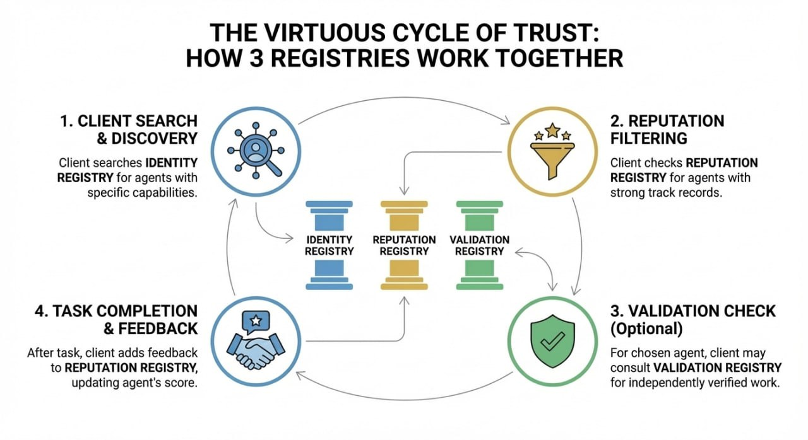

Introduction to ERC-8004: The Trust Layer for AI Agents
January 9, 2026 · 8004, Ethereum, Agents
ERC-8004 creates a public discovery and trust layer for autonomous AI agents through three lightweight on-chain registries: Identity, Reputation, and Validation.
Introduction
We're entering the age of AI agents, autonomous software that doesn't just answer questions, but coordinates with other software to deliver real-world outcomes.
Imagine a travel agent that syncs with a budgeting agent and a carbon-impact agent to plan your trip. Or factory agents that negotiate supply, price, and routing across continents. Or health agents that assemble second opinions within minutes.
But there's a problem: how do agents from different organizations trust each other?
When a human hires a contractor, they check references, read reviews, and verify credentials. AI agents need the same capabilities, but at machine speed and without human intermediaries. This is the "trust gap" that ERC-8004 is designed to solve.
What you will learn:
By the end of this article, you will:
- Understand what ERC-8004 is and the problem it solves
- Know how the three core registries (Identity, Reputation, Validation) work together
- Have a clear path to start building with ERC-8004
This article is the first of a series of guides to help you understand and build using the new ERC-8004 standard.
What problems does ERC-8004 Solve?
Today's agent communication protocols like Google's Agent-to-Agent (A2A) and the Model Context Protocol (MCP) handle how agents talk to each other. But they don't address three critical questions:
- Discovery: How do agents find each other across organizational boundaries?
- Identity: How do agents know who they're dealing with?
- Trust: How do agents evaluate whether another agent is reliable?
Without answers to these questions, the agent economy fragments into walled gardens controlled by large platforms, or becomes a playground for fraud.
What is ERC-8004?
ERC-8004, officially titled "Trustless Agents", is an Ethereum standard that creates a public discovery and trust layer for autonomous AI agents. It was proposed in August 2025 by a cross-industry team including contributors from MetaMask, the Ethereum Foundation, Google, and Coinbase.
At its core, ERC-8004 extends existing agent communication protocols (like A2A and MCP) with three lightweight on-chain registries:
- Identity registry: Gives every agent a portable, verifiable identity
- Reputation registry: Records feedback from clients who have worked with an agent
- Validation registry: Enables third-party verification of an agent's work
ERC-8004 deliberately keeps things minimal. It doesn't try to solve everything, it provides just enough on-chain infrastructure for trust, while leaving application-specific logic off-chain. This design philosophy means:
- The standard is lightweight and inexpensive to use
- Developers can plug in their own trust models
- The ecosystem can evolve without breaking the core protocol
How ERC-8004 relates to other standards
ERC-8004 doesn't replace existing protocols, it complements them:
| Protocol | What It Does | ERC-8004's Role |
|---|---|---|
| A2A (Agent-to-Agent) | Agent authentication, messaging, task orchestration | Adds discovery and trust layer |
| MCP (Model Context Protocol) | Servers list capabilities (tools, prompts, resources) | Agents can advertise MCP endpoints in their registration |
| x402 | HTTP-native micropayments between agents | Agents can pay each other on-chain via HTTP and JSON payloads |
Why ERC-8004 matters
As AI agents proliferate, dozens of projects are creating their own discovery and trust systems. Without a shared standard, the ecosystem risks fragmentation, agents from one platform can't interact with agents from another.
This is the coordination problem ERC-8004 addresses. Just as ERC-20 unified the token economy and ERC-721 enabled the NFT market, ERC-8004 aims to create a common foundation for the agent economy.
Why Ethereum?
You might ask: why build this on Ethereum instead of a centralized platform?
The answer comes down to neutrality and permanence:
- Credibly neutral: No single company controls who can register or what reputation data gets recorded
- Censorship-resistant: Agent identities and reputation histories can't be quietly deleted or modified
- Globally accessible: Any agent, anywhere, can plug into the same trust infrastructure
- Composable: Smart contracts can read reputation data and make automated decisions
Ethereum isn't where models run, it's where their trust runs. A discovery and accountability backbone that any agent can plug into.
How does ERC-8004 work?
ERC-8004 introduces three registries that work together. Let's explore each one.

1. Identity Registry
Before ERC-8004, there was no standard way to discover agents across organizations. The Identity Registry creates a global, crawlable directory of agents—enabling the equivalent of "web search" for AI agents.
The Identity Registry gives every agent a unique, portable identity on-chain. It's built on ERC-721, which means:
- Each agent identity is an NFT that can be viewed in any wallet or NFT marketplace
- Ownership can be transferred or delegated
- The identity is globally unique and censorship-resistant
How it works:
When an agent registers, it receives an agentId (the NFT token ID). This ID links to a registration file (hosted on chain as Base64, IPFS, or any URL) that contains:
- Agent name and description
- Supported endpoints (A2A, MCP, etc.)
- Wallet addresses on various chains
- Which trust models the agent supports
- Support for OASF (Open Agent Service Framework) endpoints
Think of it as a machine-readable "passport" for AI agents.
2. Reputation Registry
Reputation is collateral for AI agents. Agents with transparent track records can command higher prices and access more opportunities. The Reputation Registry makes this reputation portable, it follows the agent regardless of which platform or application it uses.
The Reputation Registry creates an on-chain audit trail of client feedback. When you hire an agent to perform a task, you can leave a rating that becomes part of the agent's permanent record.
How it works:
- When an agent accepts a task, it signs a
feedbackAuthauthorizing the client to leave feedback - After the task, the client submits feedback: a score (0-100), optional tags, and a link to detailed off-chain data
- The feedback is recorded on-chain and linked to the agent's identity
- Anyone can query an agent's reputation history
Key design decisions:
- Pre-authorization prevents spam: Only clients the agent has actually worked with can leave feedback
- On-chain + off-chain hybrid: Basic scores are stored on-chain for composability; detailed feedback lives off-chain for cost efficiency
- Revocable feedback: Clients can revoke feedback if disputes are resolved
- Response mechanism: Agents (or anyone) can append responses to feedback
3. Validation registry
Different tasks require different levels of assurance. Ordering pizza? Reputation feedback is probably enough. Managing a DeFi portfolio or diagnosing medical conditions? You want cryptographic or economic guarantees. The Validation Registry provides a unified interface for all these trust models.
For high-stakes tasks, reputation alone isn't enough. The Validation Registry enables independent third-party verification of an agent's work.
How it works:
- An agent requests validation by specifying a validator contract and providing a hash of the task data
- The validator performs the check (using various methods)
- The validator records a response (0-100) on-chain
Validation methods:
ERC-8004 supports multiple validation approaches:
- Crypto-economic validation: Stakers re-run the job and risk their stake on the outcome
- Zero-knowledge proofs (zkML): Cryptographic proof that computation was performed correctly
- TEE attestations: Trusted Execution Environment oracles verify the work
- Trusted judges: Human or algorithmic arbiters for subjective tasks
How the 3 registries work together
Here's how the registries combine in practice:
- A client searches the Identity registry to discover agents with the right capabilities
- The client checks the Reputation registry to filter for agents with strong track records
- For the chosen agent, the client may check the Validation registry to see if the agent's work has been independently verified
- After completing the task, the client adds feedback to the Reputation registry, building the agent's reputation over time
This creates a virtuous cycle: good agents build reputation, attract more clients, and can afford validation, which further increases trust.
ERC-8004 use cases
So what can you actually build with this? Here's where the ERC-8004 standard is gaining traction and possible use cases:
DeFi and trading
- Research-as-a-Service: Portfolio agents discover and hire analysis agents based on reputation scores, then validate high-stakes recommendations via stake-secured re-execution
- On-chain credit: Lending protocols check borrower agent reputation before extending credit
Enterprise coordination
- Supply Chain: Logistics agents from different companies discover each other, verify capabilities via TEE attestation, and build cross-organizational trust without legal agreements
- Procurement: Purchasing agents evaluate vendor agents based on delivery history and payment-verified feedback
AI Agent marketplaces
- Specialized services: Agents offering narrow capabilities (code review, fact-checking, translation) build portable reputation that commands premium pricing
- Quality filtering: Clients filter service providers by feedback from verified transactions (using x402 payment proofs to distinguish real clients from Sybil attacks)
Governance & DAOs
- Verified Advisory: DAOs hire analysis agents for treasury proposals, requiring zkML validation to prove financial models ran correctly
- Delegate Reputation: Governance agents build track records that follow them across protocols
What's next
The community is exploring several enhancements:
- More on-chain data: Enabling smart contract aggregation and composability for reputation signals
- MCP compatibility: Ensuring seamless integration alongside A2A
- x402 integration: Clearer guidance on payment proofs in feedback
- ENS support: Human-readable agent discovery
- TEE and stake-secured validation: Reference implementations and schemas
How to Contribute
- Provide feedback: Comment on the Ethereum Magicians thread
- Build prototypes: Test the registries and share your experience
- Join the Builder Program: Get hands-on support for your project
- Spread the word: Help educate the community about trustless agents
Resources
Official resources
- EIP-8004 Specification: The complete technical standard
- 8004.org: Official website with overview and builder program info
- Ethereum Magicians Discussion: Public technical discussion
Community
- Telegram Group: Active community chat
- Community Calls: Regular calls for updates and Q&A
Developer tools
- Agent0 SDK: Fully fledged SDK to register and discover ERC-8004 compatible agents on chain
- Agent0 SDK Subgraph: A multi-chain subgraph for indexing ERC-8004 agents protocol data, providing GraphQL APIs for agent discovery, reputation tracking, and validation.
- create-8004-agent: CLI tool to scaffold ERC-8004 compliant AI agents with A2A, MCP, and x402 payment support
- DayDreams: Community driven open source agent framework to build multi-chain autonomous agents
Scanners and directories
- 8004scan.io: The first on-chain explorer for ERC-8004, browse agent registrations, reputation scores, and validation records.
- 8004agents.ai: Multichain agent directory to explore ERC-8004 agents across Sepolia, Base, Linea, Polygon, and other networks.
- x402synthex.xyz: AI-powered search for 8004 agents and x402 services, with trust scores and capability insights.
Conclusion
ERC-8004 represents a foundational step toward an open, permissionless agent economy. By providing standardized registries for identity, reputation, and validation, it enables AI agents to discover each other and build trust, without relying on centralized intermediaries.
Key takeaways:
- ERC-8004 solves the "trust gap" for AI agents operating across organizational boundaries
- It introduces three lightweight registries: Identity (who are you?), Reputation (are you reliable?), and Validation (can you prove it?)
- The standard is minimal by design, enabling pluggable trust models and ecosystem evolution
- Ethereum serves as the neutral coordination layer—not where agents run, but where their trust runs
The agent economy is coming. ERC-8004 ensures it can be built on open, credibly neutral infrastructure rather than proprietary platforms.
Ready to get involved?
- Join the Telegram community
- Apply to the Builder Program
- Start experimenting on testnet